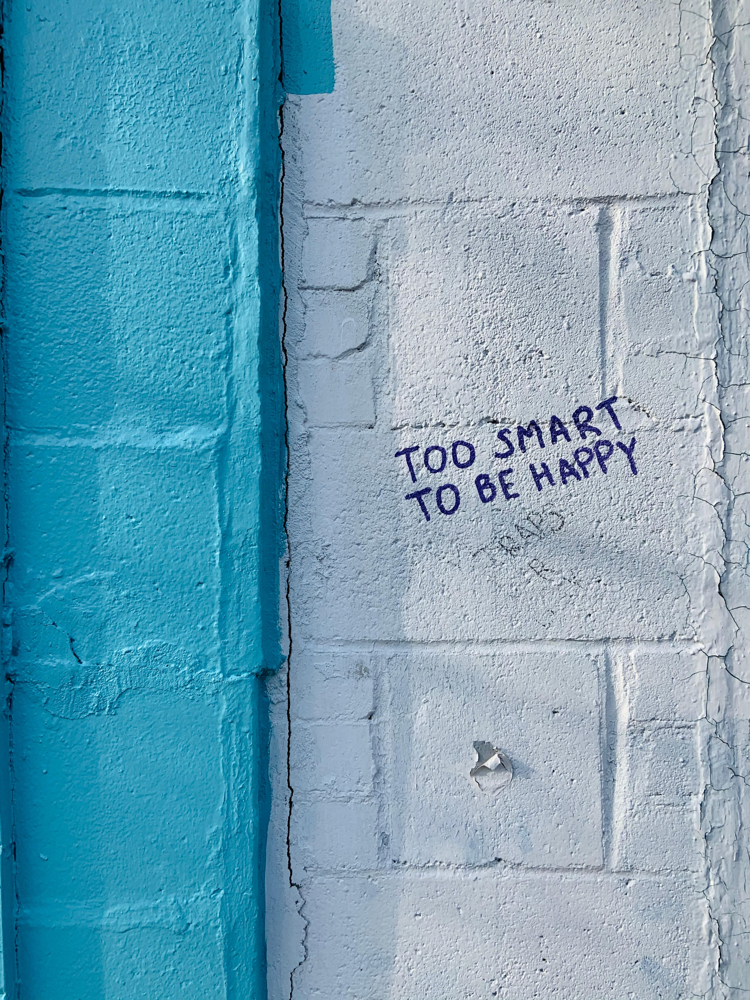

This here is a shoutout to all the young people trying to find their way in this fast, competitive world. 🍻
Have you ever stopped and said to yourself, ‘Wow! I’m doing great’
If not, do it now, because you are. 📌
You are trying to build a beautiful life for yourself through your thoughts, education, work, and it’s actually awesome. And, then being supportive
and inclusive towards other people, being empathetic...kudos!
Yes, you’re doing it for yourself, but starting this early, understanding that you need to begin to reach somewhere is not how it used to be. 🙃
How actually it used to be…pretty laid back 👀
In a good sense, we still can be, in our thoughts.
If we are sorted in our minds, we can be pretty much sorted in our life 😇
But, again only if we want to. If we are stuck in our ways, we’re stuck in our life.
